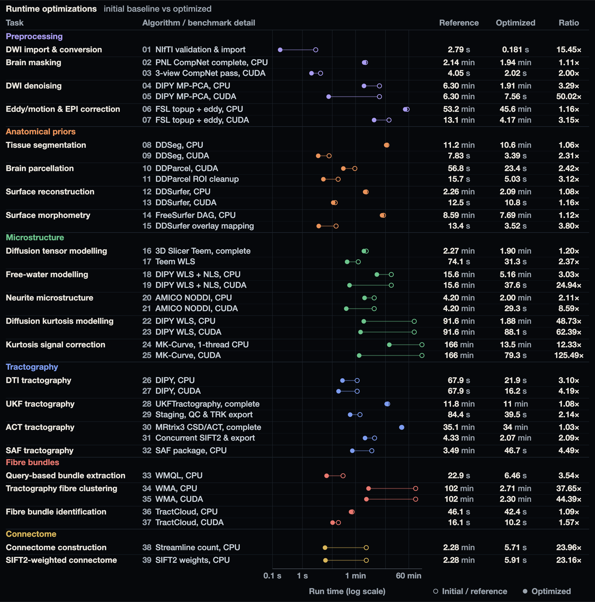

宣传片
原生扩散空间
SlicerDSpace 的输出结果。
展示各分析路线的代表性参数图、皮层表面、纤维通路和连接网络，所有结果均位于原生扩散空间。

选择分析路线
工作流概览。

开始使用
从安装到获得第一份结果。
图形界面安装与运行
-
安装 3D Slicer 5.10.0
下载并安装对应系统版本（Windows x86_64、Linux x86_64 或 Apple Silicon macOS arm64）的 3D Slicer 5.10.0，官方地址： https://download.slicer.org/.
- Windows
%LOCALAPPDATA%\slicer.org\Slicer 5.10.0\Slicer.exe（或C:\Program Files\Slicer 5.10.0\Slicer.exe）- Linux
~/Slicer-5.10.0-linux-amd64/Slicer（或/opt/Slicer-5.10.0-linux-amd64/Slicer）- macOS
/Applications/Slicer.app（命令行启动器：/Applications/Slicer.app/Contents/MacOS/Slicer）
-
下载一键安装器
核心工作流、内置运行环境与解剖先验模型均已包含在统一底座套件中。请在下方选择操作系统直接下载引导安装包；重启 3D Slicer 后，可在弹出的安装向导中按需勾选 WMA 白质图谱及镜像源、代理或离线目录（通用引导包与独立离线底座包亦可在以下页面获取： https://github.com/NeuroDMRI/SlicerDSpace/releases).
-
通过一键引导包安装完整插件
-
下载上方定制的
.zip一键引导包（如SlicerDSpaceSetup-macOS.zipSlicerDSpaceSetup-Windows.zipSlicerDSpaceSetup-Linux.zip). -
打开 3D Slicer 5.10.0 › 右上角 Extensions Manager (View › Extensions Manager）› 右上角小扳手 Install Extension from File…，选中已下载的
.zip并重启 Slicer。 -
重启后将自动弹出安装向导 — 按需勾选可选 WMA 图谱或网络选项并点击 Start Install；安装完成后重启 Slicer，在顶部打开 Modules › Diffusion › SlicerDSpace.
若在离线机器安装，也可通过同一入口导入独立分平台全量底座包（
SlicerDSpace-v*-Windows-x64.zipSlicerDSpace-v*-Linux-x64.tar.gzSlicerDSpace-v*-macOS-arm64.tar.gz） （请勿使用 GitHub 自动生成的 Source code 源码归档）。 -
-
使用 SlicerDSpace 与关键细节说明
- Inputs
- 填写 Subject ID 与 Output folder （分析结果将自动创建并写入
<Output folder>/<Subject ID>/子目录中），再载入您的 DWI 影像数据。 - 示例数据
- 下载已完成预处理的 HCP 受试者 100307 多壳层 NIfTI 示例数据（
SlicerDSpace-Example-HCP-100307-NIfTI.zip，约 1.17 GB；包含data.nii.gz,bvals,bvecs与nodif_brain_mask.nii.gz；按压缩包内附带的 WU-Minn HCP 开放获取数据使用条款再分发）。 - Analysis
- 勾选需要的分析阶段（首次快速验证可仅保留 Microstructure › DTI）；点击阶段旁的
...可选择具体算法并通过齿轮按钮调整参数，随后设置 Compute device （Auto、CPU、Apple MPS 或 CUDA GPU）。 - 运行与预检
- 点击 Run SlicerDSpace。运行按钮正下方会实时显示当前阶段进度与已用耗时；启动前会自动校验依赖与模型资源，如缺少可选图谱或仅在启用 Surface postprocess时才需的一次性个人 FreeSurfer 许可，按提示通过 Prepare selected analysis environment 或许可证导入窗口配置即可。
- 结果与 QC
- 运行结果会自动关联当前输出文件夹并列在 Results面板中；点击结果项旁的眼睛图标即可在 3D Slicer 中按需加载或切换显隐（右键可卸载或打开统计表/JSON），点击 Open report 即可查看脑掩膜覆盖率、空间配准与各阶段 QC 报告，同时各阶段简明 QC 文本保存在
06_qc/.
命令行运行与队列批处理
将 SLICER_LAUNCHER 指向本机 3D Slicer 5.10.0 可执行文件，将 DSPACE_REPO 指向已安装扩展的 lib/Slicer-5.10/qt-scripted-modules 目录（或本地源码目录），再执行 DTI 最小环境检查：
export SLICER_LAUNCHER="/path/to/Slicer"
export DSPACE_REPO="/path/to/Extensions-34045/SlicerDSpace/lib/Slicer-5.10/qt-scripted-modules"
export SUBJECT_ROOT="/path/to/sub-01"
"$SLICER_LAUNCHER" --launch PythonSlicer "$DSPACE_REPO/shared/run_subject_pipeline_cli.py" \
--subject-root "$SUBJECT_ROOT" --subject-id sub-01 --no-user-config \
--targets microstructure --microstructure-stages dti --doctor- 执行三步
- 改用
--plan检查执行计划，再用--execute正式运行，三步保持一致的方法参数。 - 多方法组合
- 支持逗号分隔多种算法，例如
--microstructure-stages dti,noddi,--tractography-backend csd_act,ukf与--bundle-backend wmql,wma. - 队列批处理
- 多受试者并行批处理可调用
scripts/run_batch_pipeline.py --batch-root /path/to/study --jobs 2并附带所选分析参数。
运行时间
各模块实测运行时间。

性能优化
运行时间与并行优化。
覆盖全部六个工作流阶段的单受试者计算对比及多受试者资源感知队列调度。各方法的具体实现细节记录于仓库索引文档。
目录更新于 2026 年 11 月 19 日


每组配对对比均相对其参考路径验证数值或输出等价性；自动质控检查均已通过，但不替代人工解剖审核。 在 GitHub 上打开完整优化索引文档.
方法与资源
已集成的方法
在各产品旁选择一种或多种方法。工作流会检查采集适用性、处理依赖并复用共同准备步骤。
| 阶段 | 方法 | 集成内容 | 运行环境与资源 | 论文 |
|---|---|---|---|---|
| 输入 | DICOM / NIfTI / NRRD | 将 DICOM、NIfTI 和 NRRD 格式的输入数据统一转换为标准化的 NIfTI 格式，并匹配对应的 b 值和 b 向量。 | dcm2niix 或 Slicer DWIConvert；可使用已有脑掩膜。 | [36] [27] [28] |
| 脑掩膜 | CNN-Diffusion-MRIBrain-Segmentation（默认） | 作者扩散 CNN 脑掩膜模型及配准。 | 托管 CNN-Diffusion-MRIBrain-Segmentation 运行环境、权重及 ANTs。 | [37] [38] |
| 预处理 | MP-PCA | 随机矩阵去噪及噪声估计。 | DIPY | [39] [52] [53] [29] [30] |
| 预处理 | Gibbs 振铃去除 | 局部亚体素位移振铃校正。 | DIPY | [42] [29] [30] |
| 预处理 | FSL eddy | 涡流及运动校正。 | MRtrix3 dwifslpreproc 与 FSL。 | [43] [29] |
| 预处理 | FSL topup | 磁敏感畸变估计与校正。 | FSL；需反向相位编码数据及采集元数据。 | [44] [29] |
| 微结构 | DTI（默认） | LS/WLS 张量拟合；输出 FA、MD、AD、RD、特征值和张量迹。 | SlicerDMRI | [45] [27] [28] |
| 微结构 | 自由水 | 自由水比例及组织校正 FA/MD；支持 WLS 或 NLS 拟合。 | DIPY；需适合的多壳层采样。 | [4] [5] [6] [30] |
| 微结构 | NODDI / AMICO | 输出 NDI、ODI、IsoVF 及拟合残差。 | AMICO；需适合的多壳层采样。 | [7] [31] |
| 微结构 | DKI | WLS/OLS 拟合；输出 MK、AK、RK、KFA、MKT、RTK 和有效性掩膜。 | DIPY；检查壳层、方向数及设计矩阵秩。 | [8] [30] |
| 微结构 | MK-Curve | 校正曲线、校正后的峰度图及各参数有效性。 | 内置 Python 后端；检查 DKI 适用条件。 | [9] |
| 解剖先验 | DDSeg | 使用转换后的 PyTorch 模型输出组织标签和概率。 | PyTorch；DDSeg 权重。 | [2] |
| 解剖先验 | DDParcel | 使用源自作者的模型推断解剖脑区。 | PyTorch；权重及配准模板。 | [3] |
| 解剖先验 | DDSurfer | 重建原生空间白质面和软脑膜面网格。 | PyTorch；DDSurfer 权重。 | [1] |
| 解剖先验 | BRAINSFit 配准 | 为适用的解剖路线执行模板配准。 | Slicer BRAINSFit / BRAINSResample | [51] [27] |
| 解剖先验 | 表面后处理 | 厚度、曲率、球面配准和 DK/Destrieux 图谱映射。 | 有许可的原生组件运行包；完整软件套件可选。 | [33] [47] [48] [49] |
| 纤维追踪 | 响应函数估计 | Dhollander 三组织响应函数估计。 | MRtrix3 | [12] [13] [29] |
| 纤维追踪 | CSD / MSMT-CSD | 单组织或多组织纤维方向分布。 | MRtrix3；取决于所选采集路线。 | [11] [46] [10] [29] |
| 纤维追踪 | 多组织归一化 | 对数域信号强度和不均匀性归一化。 | MRtrix3 mtnormalise | [17] [18] [29] |
| 纤维追踪 | iFOD2 / ACT（默认） | 使用 DDSeg 组织约束的概率追踪。 | MRtrix3；需复核解剖先验。 | [14] [15] [29] |
| 纤维追踪 | DTI 确定性追踪 | 基于张量方向及终止条件的纤维追踪。 | SlicerDMRI 与 DIPY。 | [45] [28] [30] |
| 纤维追踪 | UKF 双张量 | 自动调用官方追踪命令行工具。 | UKFTractography 扩展及 SlicerDMRI。 | [19] [28] |
| 纤维追踪 | SAF | 表面约束的短联络纤维追踪与几何筛选。 | MRtrix3；后处理后的原生表面。 | [20] |
| 纤维束 | WMQL（默认） | 官方束查询；支持子集选择及可选小脑区域查询。 | 作者 tract_querier；DDParcel 标签。 | [21] |
| 纤维束 | WMA | ORG、East-West 或 NABA 图谱配准与聚类；自动衔接 UKF。 | WMA；所选图谱；UKF 参考路线 | [22] [23] [24] [26] [54] [55] |
| 纤维束 | TractCloud | 调用作者学习型纤维分区模型并导出纤维束。 | PyTorch 后端、模型及质心。 | [25] [22] |
| 连接组 | 流线计数 | 将流线端点分配到 DDParcel 节点。 | Python 或适用的 MRtrix3 后端。 | [50] [29] |
| 连接组 | SIFT2 加权计数 | 利用 FOD 计算权重，并使用匹配流线构建矩阵。 | MRtrix3；对应的流线文件及权重。 | [16] [29] [50] |
| 连接组 | 标量与长度统计 | FA、MD、ODI 等参数均值，以及流线平均长度和总长度。 | Python API；需匹配参数图、节点及流线。 | [50] [29] [30] |
| 区域分析 | 指定脑区分析 | 复用参数图进行 ROI 统计、筛选流线并提取节点子矩阵。 | CLI / Python 工作流工具；复用已完成输出。 | [3] [30] [50] |
默认使用 DTI、CSD/ACT 和 WMQL。各阶段参数通过对应阶段旁的“...”配置，所选路线的缺失依赖会在运行前检查并经用户确认后准备；外部工具和模型资源不会静默安装。
实现来源与验证记录 记录各后端版本及单项测试范围。